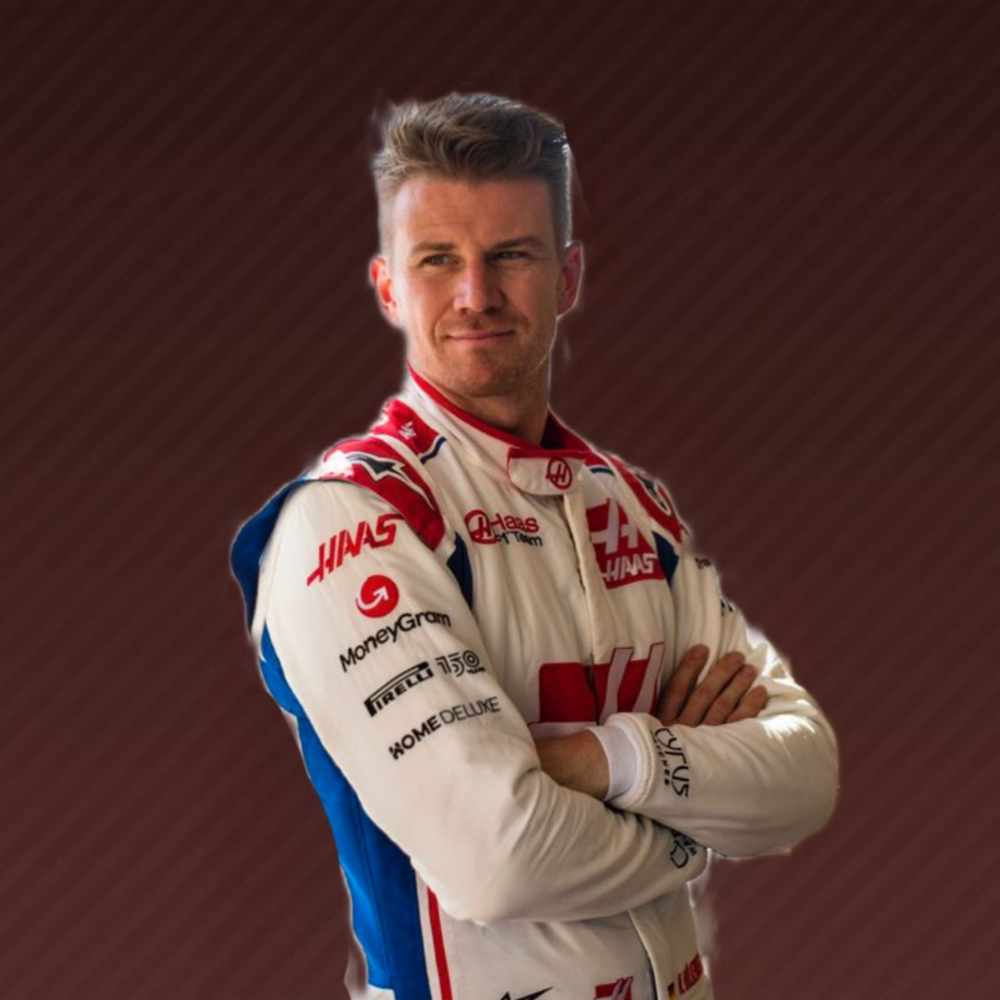

20

Kevin Magnussen


27
Haas F1 Team nació en 2014 con la idea de debutar como constructor en la Fórmula 1 en la temporada 2015. Finalmente, debutaron un año más tarde con una organización y una estructura más preparada y desarrollada, además de contar con la inestimable ayuda de Ferrari. Con un palmarés exitoso en la NASCAR, el propietario del equipo, Gene Haas, decidió abarcase en el egocéntrico mundo europeo del automovilismo y contactó con el experimentado gerente italiano en la F1, Günther Steiner, para encargarse de la dirección de Haas en la F1, además de llamar a Esteban Gutiérrez y a Romain Grosjean para ser los pilotos titulares de la escudería norteamericana en su temporada de debut. De esta forma, Estados Unidos volvió a tener en 2016 representación en la máxima categoría del automovilismo internacional tras la marcha de Shadow, de Penske y de Parnelli décadas atrás. Aunque, pronto, el equipo Haas se convirtió en un objeto de risas y burlas para los aficionados en redes sociales debido a su excéntrica trayectoria en la Fórmula 1. En 2017, Magnussen y Grosjean formaron una alineación explosiva de pilotos en Haas que tuvieron sus rifirrafes en la pista desde sus inicios. Así durante cuatro temporadas consecutivas. Steiner decidió no modificar su pareja de pilotos hasta 2021.La temporada 2021 fue la guinda del pastel. El equipo Haas aceptó la oferta millonaria de un empresario ruso, Dmitry Mazepin, padre del piloto Nikita Mazepin, para patrocinar al equipo estadounidense y colorear el VF-21 con los colores de la bandera rusa tras el fichaje de su polemico hijo, ademas se sumo a la escuderia una joven promesa con un pedigree de lo mejor, Mick Schumacher pero esto no significo grandes cambios en el desempeño del equipo. Ya para la temporada 2022 el equipo HAAS estaba nuevamente en todos los titulares cuando, en represalia por la invasion rusa a Ucrania, el equipo decidio cortar todos los lazos con la Familia Mazepin renunciando a su patrocinio y despidiendo a Nikita en visperas del inicio de temporada. En su lugar, llegaria el veterano Kevin Magnussen para completar la alineacion. Con un lustro en la Fórmula 1, la historia de Haas da para una novela.